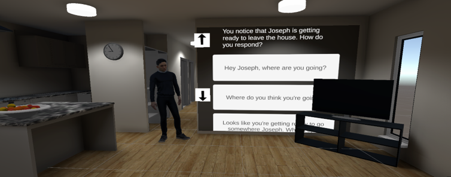

Research Projects
A collection of research-driven development projects spanning virtual reality, neurodiversity, and professional training — from co-designed sensory environments to immersive simulation tools.

Co-designing A Customisable VR Sensory Room with Autistic Adults
Participatory research developing personalised virtual sensory environments in collaboration with autistic adults, exploring preferences and design considerations for calming spaces.

Standalone VR Sensory Room Prototype
A portable, standalone implementation of the VR sensory room, bringing customisable sensory experiences to an accessible, wireless platform.

VR De-escalation Training Simulator
Development and evaluation of VR-based de-escalation training programs to better prepare care professionals for challenging situations in disability support settings.